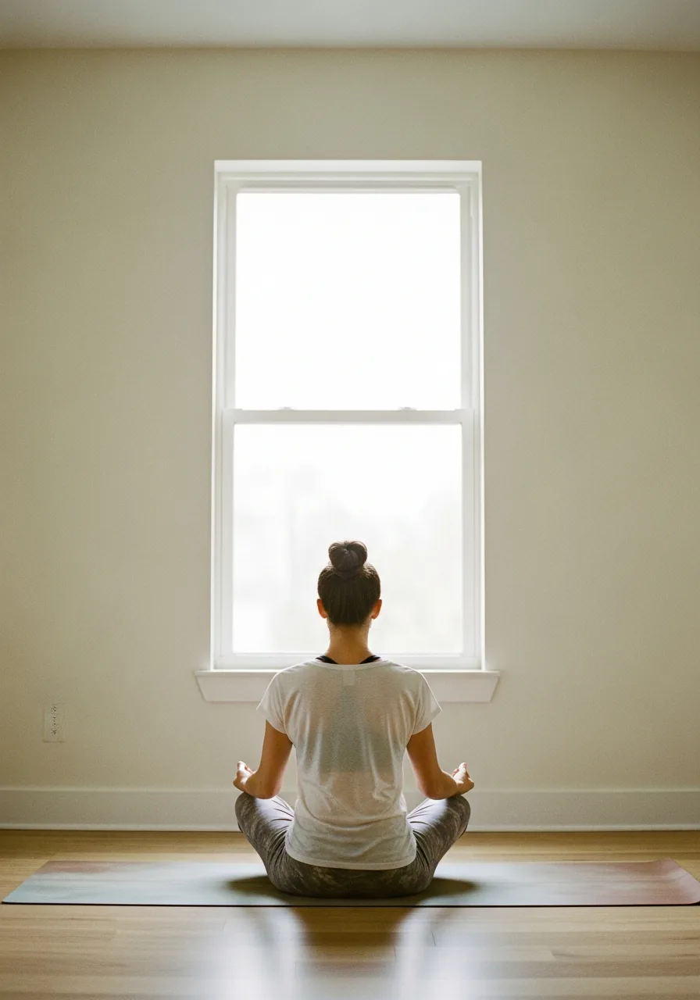
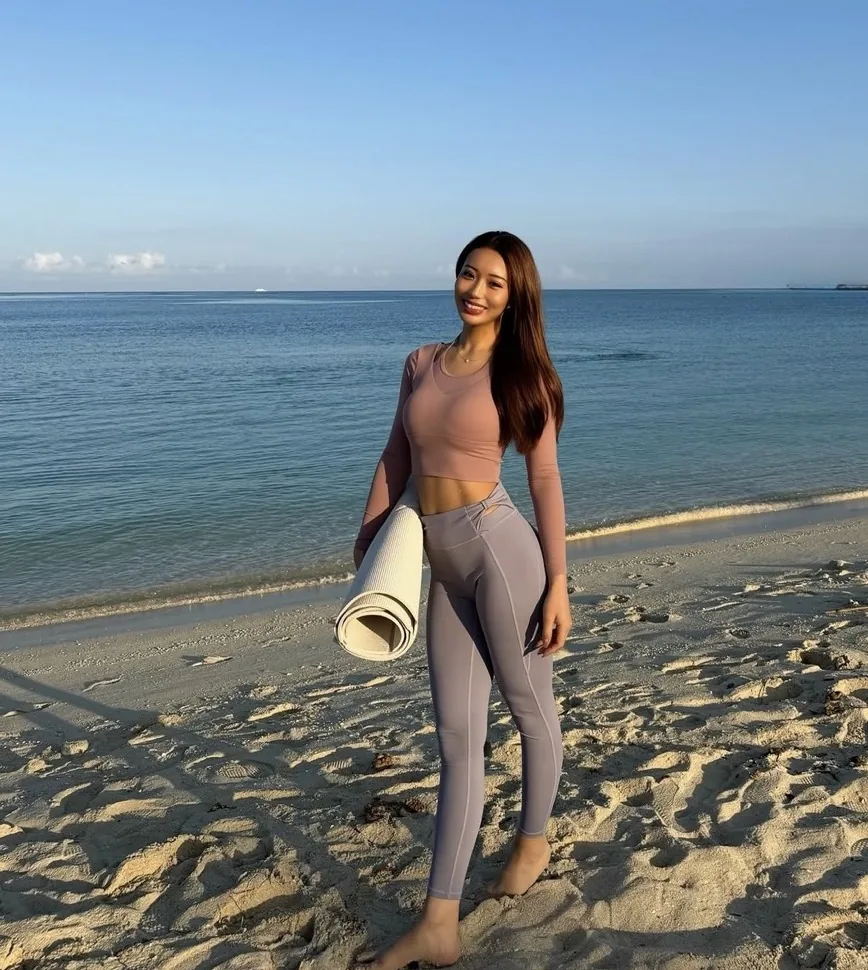

first step
まずは試す
硬さ・疲れ・数値の悩みを、一度プロに見てもらう。負担の少ない入口です。
- 体験パーソナル対面1回・約60分
- ¥8,000
- オンライン体験自宅で受けられる
- ¥5,000
for men in their 40s
— train smarter, move better
追い込んでも体型が変わらない、股関節は硬く、デスクワークで体はガチガチ。原因は努力不足ではなく、固まった体を動かせる範囲が狭いこと。可動域を広げてから鍛える。だから40代でも、疲れにくく動ける体へ整います。

どれも、意思が弱いからではありません。あなたの硬くなった体に合う整え方に、まだ出会っていないだけ。動ける体を取り戻すところから、一緒に始めましょう。
yoga × mobility × gut health
呼吸を整えると、乱れた自律神経が落ち着き、睡眠が深くなる。寝ても抜けなかった疲れを、根本から軽くしていく。
硬い股関節をまず広げてから鍛える。動ける土台を作るから、ただ追い込むより疲れにくく、体がしっかり変わる。
内側から整えて、健診の数値とコンディションに向き合う。続く食事の組み立てで、体の中から土台を立て直す。
呼吸・可動域・腸活は、別々にやっても効きにくい。あなたの体と働き方に合わせて3つを組み合わせるから、結果につながって、無理なく続く。
moments
※写真はイメージです。日々のヨガ・ボディメイクの様子や整え方のヒントは Instagram で発信しています。気になった方はのぞいてみてください。

about Reona
私自身、長いあいだ自分の体との向き合い方をこじらせ、誰にも言えず一人で抱え込んでいた時期があります。そこから立て直せたのは、自分を痛めつけるのをやめて、整えることに切り替えたから。子どもを授かったことも、生き方を変える大きなきっかけになりました。だから、無理に追い込まなくても、人は何歳からでもやり直せる。本気でそう思っています。
強さは、追い込んだ先にはない。
硬さをほどき、整えてから鍛える。そのほうが、疲れにくく、長く動ける。一緒に立て直していきましょう。
下のボタンから友だち追加。体の硬さや健診の悩み、気になることはそのまま聞いてください。
LINEのやり取りで、ご希望の日時と受け方（対面パーソナル／オンライン）を調整します。
対面、またはオンライン（Google Meet）で。硬さをほどくところから始めるので、運動から離れていた方も大丈夫です。
むしろそういう方のためのプログラムです。最初に股関節まわりの可動域を広げてから鍛えるので、かたい方ほど「動かしやすくなった」を実感しやすい。いきなり追い込むより疲れにくく、効きます。
大丈夫です。今の体力と硬さに合わせて、ストレッチや呼吸から少しずつ始めます。一人で頑張る必要はなく、三冠トレーナーが横で組み立てて伴走します。
受けられます。オンラインのパーソナル、フォーム動画のLINE添削、腸活の食事サポートで、自宅からでも整えられます。出張に対応できる場合もあるので、ご希望はLINEでご相談ください。
毎週決まった時間に縛りません。スケジュールに合わせて日程を調整し、来られない週はLINE添削とオンラインで補えます。仕事が忙しい40代の働き方に合わせて設計します。
個室・出張対応、三冠トレーナーの直接設計、可動域専門の組み立て、腸内環境の検査まで含むためです。ハイブリッド・パーソナルは3ヶ月集中 ¥198,000、最高峰6ヶ月 ¥298,000（税込）。まずは負担の軽いお試し・オンラインから始められます。
熊本で本気のボディメイクをお探しの方も、遠方からオンラインで整えたい方も。あなたの体と働き方に合う受け方を、一緒に見つけましょう。
何歳からでも、体は整え直せる。
疲れない、動ける、ここから勝ちにいく。
— wellness by Reona —
LINEで体験について相談する